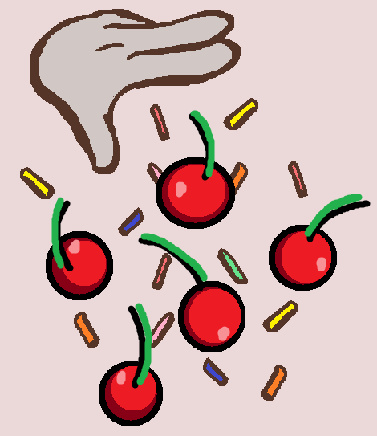

Step 5: Decorating the Cake
The final step is decorating the cake and giving it the classic Black Forest cake appearance. Decoration helps make the cake look finished while also adding extra flavor and texture. Traditional Black Forest cake is usually decorated with whipped cream, chocolate shavings, and cherries.

Cover the Cake with Whipped Cream
Use a spatula to spread the remaining whipped cream over the top and sides of the cake. Try to spread it as evenly as possible so the cake has a smooth finished look. If some crumbs mix into the cream, that is normal for beginners.
Add Chocolate Shavings
Sprinkle chocolate shavings over the top of the cake and gently press some onto the sides if you want a more traditional appearance. Chocolate shavings add texture and help give Black Forest cake its recognizable look.
Add Cherries
Place whole cherries on top of the cake as a finishing decoration. You can space them evenly around the top or place them in the center depending on how you want the cake to look.
Final Tip
If the whipped cream becomes too soft while decorating, place the cake in the refrigerator for a few minutes before continuing. Chilling the cake before serving will also help the layers stay firm and make slicing easier.